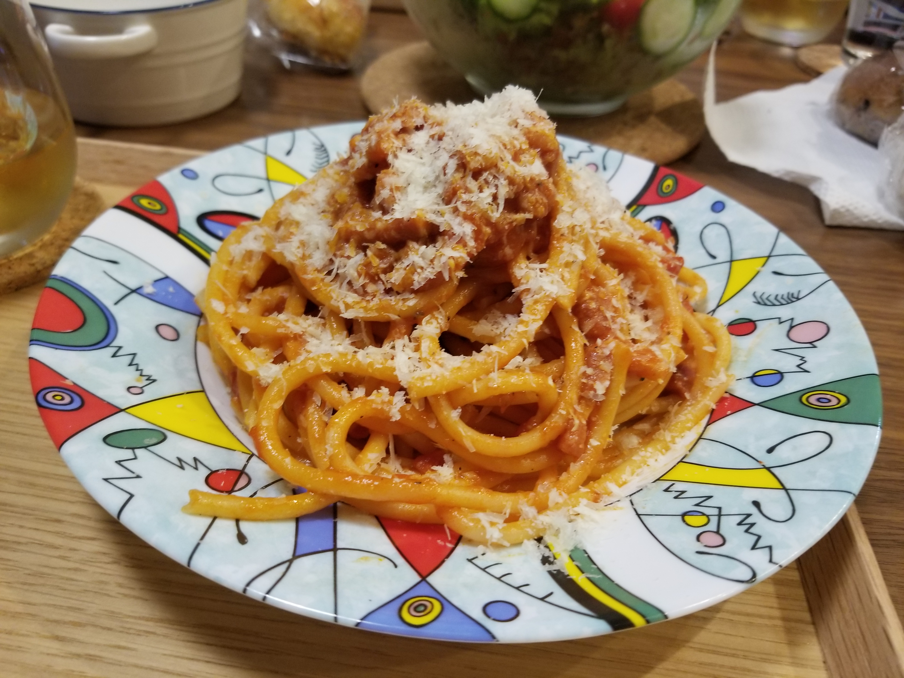

Bucatini alla Amatriciana

Description
Buccatini alla Amatriciana is an ancient dish created by shepherds from a handful of simple ingredients.
Modern versions are made with guanciale, cured pork cheek, wine, olive oil or lard, tomatoes, and pecorino cheese.
Variations abound, and controversy over what is authentic continues.
This dish is made with a type of pasta called Buccatini, similar to length in sphagetti but thicker with a hollow interior. Simplicity of
the ingredients in this dish are a great representation of what Italian cuisine brings to the table.
Ingredients
- 250g of Buccatini pasta
- 75 grams of guanciale(subsitutes: pancetta or sopressata)
- 1 can of whole peeled tomatoes
- A glass of white wine
- salt/pepper
Instructions
- First, set a pan to low heat and place your pancetta on the pan. Slowly cook it until the fat renders out and the outsides are golden brown and
and the insides are still soft. Once the fat is rendered out and the pancetta is cooked you may leave it on the pan until your pasta is ready.
- Add your glass of white wine to the pan and let the wine deglaze the pan and allow time for the alocohol to evaporate under medium heat.
- Add your tomatoes that have been crushed before hand and cook with the pancetta and wine for about 10 to 15 minutes.
- Boil a large pot of water with 1 tablespoon of rock salt. Cook your pasta according to the ingredients on the package.
- Third, once your pasta is close to cooking scoop a mug of pasta water and keep on the side. The starches within the pasta water will help create a rich creamy sauce.
- Next, reheat your sauce if it has been sitting for a while and add your cooked pasta to the pan with the pancetta. Toss and cook for
- On medium low heat add the cooked pasta to your pan with the sauce. Add about a quarter of the pasta water you saved from your mug earlier
and start mixing and tossing until the sauce and pasta are combined well.
- Add some grated pecorino romano cheese while tossing. Then plate your pasta.
- Finish the pasta off with a desired amount of grated cheese.
Recipe by Vincenzo's plate
Return to Recipes